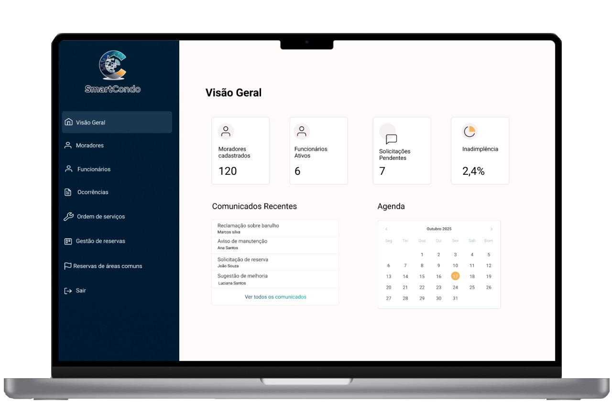

Mais transparência na comunicação
Informações claras e acessíveis para todos. Facilite a comunicação entre síndico, moradores e funcionários sem desencontros.
 SmartCondo
SmartCondo
Centralize comunicados, reservas e documentos em um só lugar.
Informações claras e acessíveis para todos. Facilite a comunicação entre síndico, moradores e funcionários sem desencontros.
Organize reservas, finanças e comunicados em poucos cliques. Uma plataforma prática que facilita a rotina de todos.
Tenha atas, regulamentos e reservas sempre à mão, online e disponíveis quando precisar.
Monitore entradas e saídas com total controle. Mais segurança para moradores e tranquilidade para a gestão.
SmartCondo é a solução completa para gestão moderna de condomínios. Com uma plataforma intuitiva e segura, ele facilita a comunicação entre moradores e síndicos, organiza reservas e documentos, e garante mais controle e transparência em todas as áreas do condomínio. Simplifique o dia a dia, economize tempo e transforme a administração do seu condomínio em uma experiência eficiente e tranquila.

Nós somos alunos da PUC Minas, do curso de Análise e Desenvolvimento de Sistemas (ADS) EAD, do Eixo 1, turma 9, grupo 3, no ano de 2025.
Este trabalho faz parte das atividades do primeiro semestre e tem como objetivo aplicar, na prática, os conceitos que estamos aprendendo nas disciplinas iniciais do curso.
Nosso projeto é o desenvolvimento de um sistema de gerenciamento de condomínio, que busca facilitar a comunicação entre moradores e administração, além de organizar informações importantes do dia a dia, como reservas de áreas comuns, avisos, ocorrências e controle de despesas.
A proposta é unir teoria e prática: ao mesmo tempo em que estudamos fundamentos de programação, engenharia de software, web e lógica computacional, colocamos em prática o que aprendemos para criar uma solução que simule um caso real de uso.
Este trabalho representa nosso primeiro passo em equipe no curso, reunindo diferentes ideias, habilidades e aprendizados.